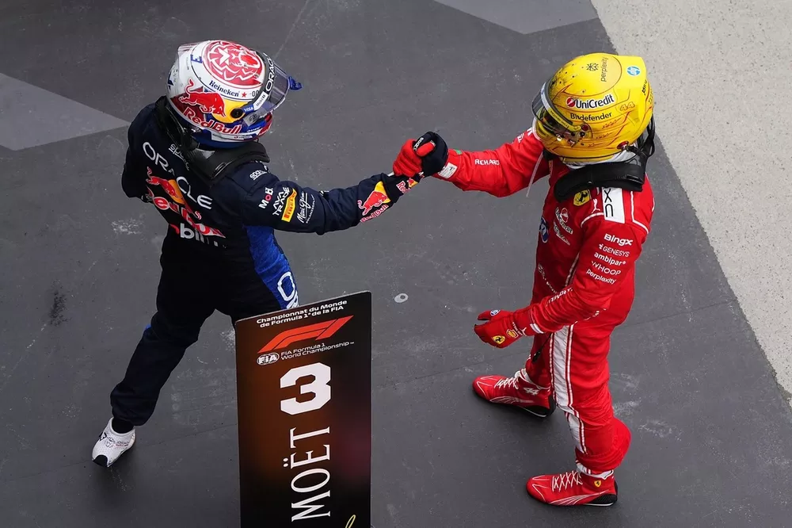

My Involvement

One specific example of my engagement with Formula 1 was following the just-finished 2026 Canadian Grand Prix. Kimi Antonelli claimed his fourth consecutive victory of the season, while title rival George Russell suffered a power unit failure that dealt a significant blow to his championship hopes. With only one Mercedes remaining out front, Lewis Hamilton and Max Verstappen produced a thrilling battle for second, which Hamilton secured with a stunning move around the outside of Turn 1. Watching that late race duel unfold and seeing Lando Norris retire with a gearbox issue after mounting a recovery drive — reinforced what I enjoy most about F1: how a single race can swing a championship narrative so dramatically. I regularly watch race weekends including practice and qualifying sessions, not just the race itself, to better understand how setups and conditions affect performance.